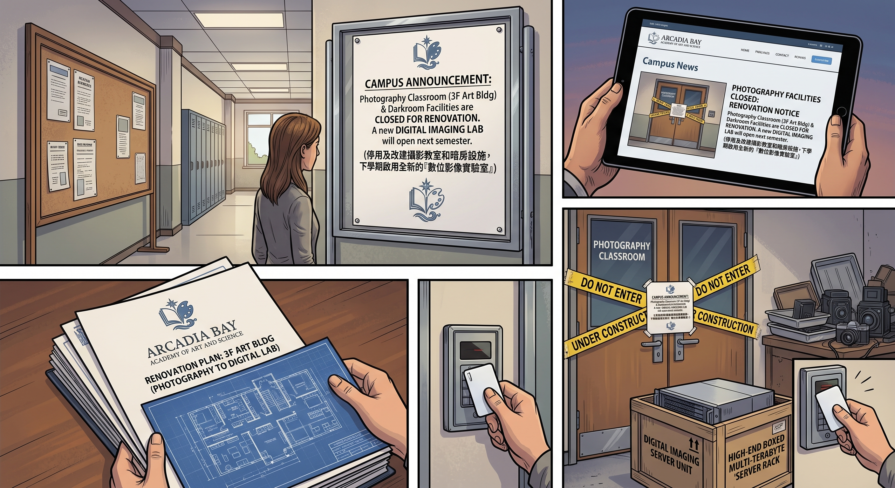

消失的暗房

一、拆除公告
新學期開始前,布萊克威爾校方在公告欄貼出一則簡短通知:原藝術教學樓三樓的攝影教室及附屬暗房設施,將於本學期全面停用並改建,預計於下學期啟用全新的「數位影像實驗室」。
公告下方,附了一段官方說辭,措辭謹慎而正式——「因應時代趨勢與教學設備更新需求」,隻字未提那個真正的原因。
Chloe 看到公告時,只是默默劃了根火柴點煙,沒說話。
二、參觀日
改建工程耗時將近半年,終於完工。開學第一週,學校安排了一場「新設施參觀日」,讓學生提前熟悉環境。
Max 猶豫了很久,最終還是跟著 Chloe 一起走進那棟她曾經無數次踏入、又在很長一段時間裡刻意繞道避開的建築。
三樓的空間已經徹底面目全非——原本堆放沖印藥水、瀰漫著顯影液刺鼻氣味的暗房隔間,連同那些笨重的舊式放大機、沖洗架,全部被拆除清空。取而代之的,是一整排嶄新的液晶螢幕工作站,牆面刷上明亮的白色,天花板裝著柔和的LED燈,空氣裡只有淡淡的新裝潢油漆味,和暗房記憶裡那股熟悉的、刺鼻的化學藥水味,毫無半點相似之處。
Max 站在門口,深吸一口氣,心跳卻異常平穩。
沒有那股氣味,沒有那種昏暗的紅色安全燈,沒有讓她瞬間胃部緊縮的、屬於那個地方的一切感官記憶。
「感覺怎麼樣?」Chloe 輕聲問,手悄悄握住她的。
「很陌生,」Max 慢慢吐出一口氣,語氣裡帶著一絲連自己都沒預料到的釋然,「陌生到,完全不會讓我想起任何事。」
三、複雜的告別
負責介紹新設施的老師,興致勃勃地講解著這套全新的數位工作流程——高階掃描器、色彩校正螢幕、雲端修圖軟體,整套系統效率高、乾淨、無毒無味,徹底告別了傳統暗房沖印那套繁瑣又帶有職業危害風險的化學流程。
「以後,」那位老師總結道,「學校不會再開設傳統濕式暗房課程了,一律採用數位攝影教學。」
其他同學大多露出滿意的表情——畢竟數位流程確實方便快捷得多。
Max 站在人群後方,望著那排嶄新的螢幕,心裡卻湧起一種說不清道不明的複雜情緒。
她理智上完全理解、甚至由衷慶幸這個決定——沒有了那股氣味,沒有了那個空間,她再也不用擔心自己會在某個尋常的下午,毫無預警地被拖回那段最黑暗的記憶。
但與此同時,一絲極淡的、近乎奢侈的惆悵,還是悄悄浮上心頭——那些她曾經深愛過的東西:紅色安全燈下,看著影像從空白相紙上緩緩浮現的魔法時刻;顯影液微涼的觸感;暗房裡那種與世隔絕、只剩下自己和光影對話的專注寧靜——這些美好的部分,終究也隨著那段創傷,一併被連根拔起,永遠消失在這棟建築裡了。
四、車庫裡的替代品
那天放學後,Max 沒有直接回家,而是拐去了 Chloe 家的車庫。
她從自己的背包深處,翻出一直捨不得丟掉的舊式暗房沖印工具箱——顯影盤、沖洗夾、還有幾罐私藏的藥水。
「妳要幹嘛?」Chloe 好奇地湊過來。
「車庫夠大,」Max 若有所思地環顧四周,語氣裡帶著一絲重新燃起的興致,「而且沒有那些讓人不舒服的記憶。」
她抬頭看向 Chloe,眼神裡帶著一種失而復得般的堅定。
「我想,」她說,「在這裡,重新搭一個屬於我自己的暗房。」
Chloe 愣了一下,隨即咧嘴笑開。
「行,」她一口答應,伸手攬過 Max 的肩膀,「老兵那堆軍用工具箱擠一擠,肯定能給妳騰出塊地方。」
「不過,」Chloe 忽然壞笑一聲,雙手抱胸,煞有介事地打量著這片「即將被徵用」的車庫空間,「既然要長期佔用老娘家的地盤,是不是該意思意思,交點租金?」
「租金?」Max 挑眉,也跟著玩心大起,「我倒是有更划算的付款方式——要不,我跟妳媽或者老兵,爆一個關於某人的超級大料?保證比租金划算多了。」
Chloe 臉色瞬間一垮,秒慫:「等等等等,妳想爆什麼料?」
「比如說,」Max 慢悠悠地開口,眼底帶著促狹的笑意,「某人上次熬夜用 AI 腦洞生成我們倆的平行世界故事,結果隔天頂著一張生無可戀的臉去做社工訪談的事?」
「妳不能說!」Chloe 立刻炸毛,一把捂住她的嘴,「這是妳最卑鄙的地方,Max Caulfield!怎麼可以這麼壞!」
Max 從她手底下含糊不清地笑出聲,好不容易掙脫開,理直氣壯地聳肩:「這是妳教我的。」
「我什麼時候教妳用黑歷史威脅我了!」
「近墨者黑,」Max 笑得眉眼彎彎,「妳自己說的。」
Chloe 氣結,瞪著她半晌,最終還是敗下陣來,無奈地嘆了口氣。
「行行行,」她舉手投降,「車庫免費借妳用,租金那部分當我沒說。」
窗外夕陽正好,車庫裡塵埃在光束中緩緩浮動,那個曾經屬於暗房的、關於光影與魔法的美好部分,終究還是在一個全新的、屬於她們自己的空間裡,重新找到了落腳之處。